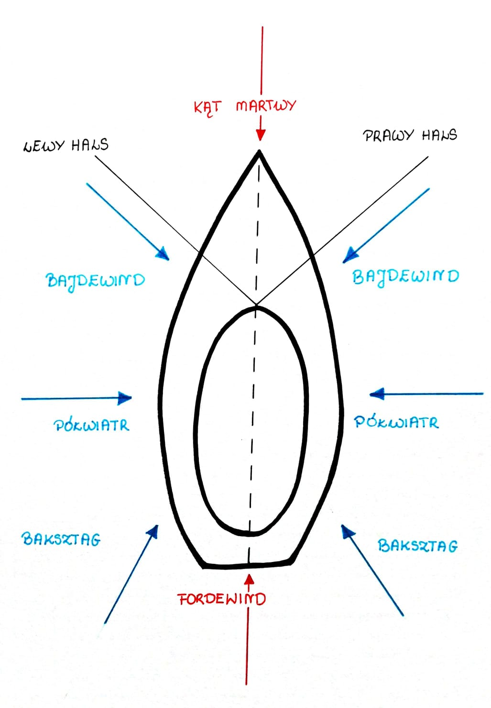
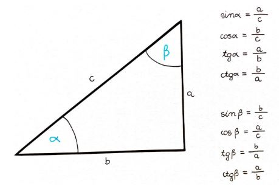
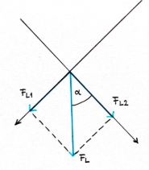

Nazwy wiatrów
Rodzaje Wiatrów
- WR - wiatr rzeczywisty
- WP - wiatr pozorny
- WW - wiatr własny
Wiatr rzeczywisty to taki, którego prędkość mierzymy odnosząc się do nieruchomego punktu.
Jest to wiatr, który można zaobserwować względem poruszającego się jachtu. Jego wartość może być większa od wartości WR jak i WW, o którym mowa poniżej, ponieważ WP to wypadkowa tych dwóch wektorów. Obserwujemy to z poniższych rysunków.
Jest to względny przepływ powietrza, który wynika z ruchu jachtu. Ma on taką samą prędkość, jak prędkość łodzi. Ważne cechy wektora obrazującego WW: kierunek zgodny z kierunkiem ruchu łodzi, przeciwny zwrot

- Im ostrzejszy kurs pod wiatr obiera jacht, tym łatwiej zauważyć zależność między długościami wektorów obrazujących wiatr pozorny i rzeczywisty.
- Podczas płynięcia ostrym kursem żeglarz może mieć wrażenie, że wiatr osiąga bardzo duże prędkości, jednak trzeba zawsze pamiętać, że jest to wiatr pozorny
Wielkość i kierunek siły działającej na żagiel
Przyjrzyjmy się ponownie żaglowi, ale teraz wielkości oraz kierunkowi siły, która na niego działa.
Gdzie:
Fa, Fb, Fc - wypadkowe sił działających na żagiel, prostopadłe do powierzchni danej części żagla
Z powyższego rysunku możemy zauważyć, że:
- siła Fb jest niekorzystna dla prędkości jachtu, ponieważ w punkcie B Fnapędzająca = 0
- siła Fc również nie działa na korzyść, a wręcz przeciwnie - jest siłą hamując
- siłą, napędzającą łódź jest siła Fa, która ma największą wartość w przedniej części żagla
- wypadkowa siła napędzająca jacht jest skierowana ukośnie pod wiatr
- możliwe jest płynięcie w kierunku przeciwnym wiatrowi, który stanowi źródło napędu
Składowe siły aerodynamiczne
Spróbujmy przedstawić w takim razie siłę przechylając oraz siłę napędzającą za pomocą znanych sił.
FA - siła aerodynamiczna
FL - siła składowa FA
FD - opór aerodynamiczny, siła składowa FA
α - kąt żeglugi, powstający między kierunkiem wektora kierunku wiatru pozornego oraz kierunkiem wektora kursu jachtu
Aby rozważyć powyższy rysunek, przypomnijmy sobie pewne podstawy z matematyki:
1. ZALEŻNOŚCI TRYGONOMETRYCZNE W TRÓJKĄCIE PROSTOKĄTNYM
2. ROZKŁADANIE WEKTORA NA SKŁADOWE
3. WZORY TRYGONOMETRYCZNE
Teraz przejdziemy do analizowania pierwszego rysunku.
Z badania w tunelu aerodynamicznym otrzymaliśmy siły składowe FL i FD.
Siła FA rozłożona jest na powyższe składowe względem układu współrzędnych wyznaczonego przez kierunek wiatru.
Chcemy otrzymać siłę FA rozłożoną na składowe F1 i F2 względem układu współrzędnych wyznaczonego przez kurs jachtu.
Musimy więc rozłożyć składowe FD i FL względem nowego układu współrzędnych.
a) rozkładanie składowej FD na osobnym rysunku
b) rozkładanie składowej FL na osobnym rysunku:
c) sumowanie otrzymanych wektorów składowych
F1 = FLsinα - FDcosα
F2 = FLcosα - FDsinα
Co wynika z rysunku?
FD jest wyjątkowo niekorzystny dla prędkości jachtu, ponieważ:
-powoduje zmniejszenie siły ciągu F1
-powoduje zwiększenie siły przechylającej F2
Minimalną wartość kąta α możemy wyznaczyć uznając, że w tym wypadku F1 = 0. Przy tym warunku nie ma siły napędzającej.
Jeżeli podstawimy za siłę F1 wartość 0, to:
Jakie możemy wyciągnąć z tego wnioski?
-jeśli zmniejszymy opór aerodynamiczny jachtu, pojawi się niezerowa siła ciągu F1
-zmniejszenie oporu aerodynamicznego umożliwia też zmniejszenie granicznego kąta żeglugi